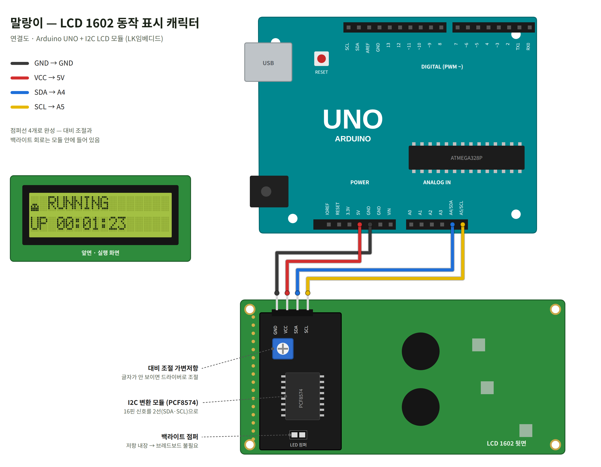
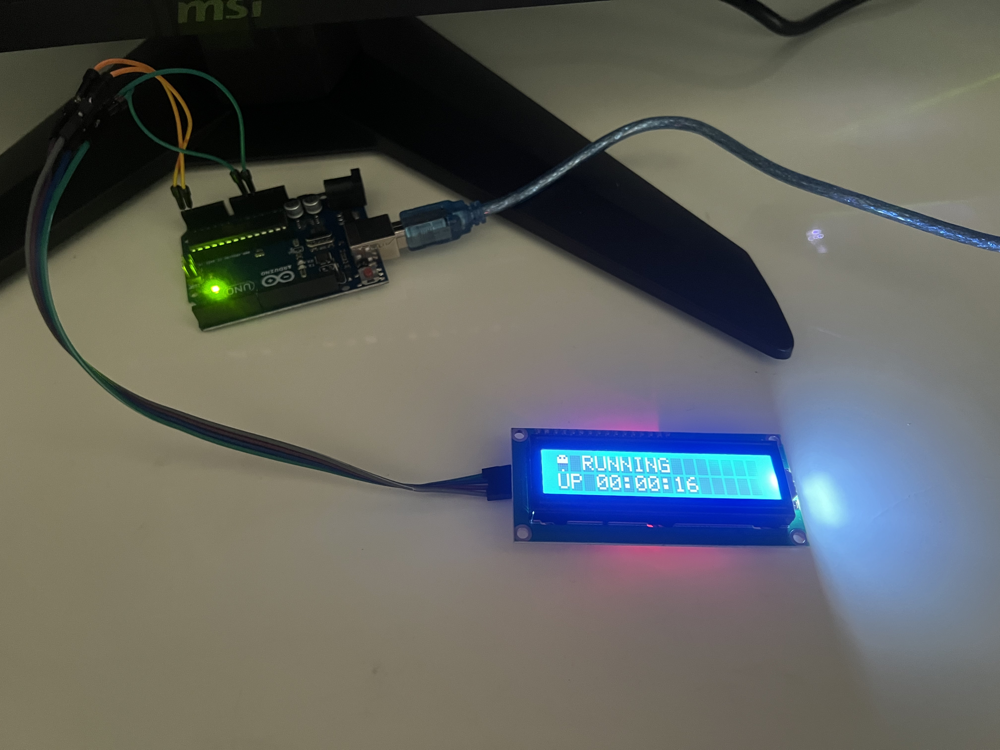

실시간 미리보기
아래 화면은 아두이노 스케치와 똑같은 상태 기계·시간값·스프라이트를 자바스크립트로 옮겨 그린 LCD 시뮬레이션입니다. 오른쪽은 (0,0) 칸 한 글자(5×8 점)를 확대한 모습입니다.
1연결도
I2C 변환 모듈(PCF8574)이 붙은 LCD를 쓰기 때문에 점퍼선 4개로 연결이 끝납니다. 대비 조절 가변저항과 백라이트 저항은 모듈 안에 이미 들어 있어서 브레드보드가 필요 없습니다.

| LCD 모듈 핀 | Arduino UNO 핀 | 역할 |
|---|---|---|
| GND | GND | 기준 전압(0 V). 두 보드의 0 V를 같게 맞춥니다. |
| VCC | 5V | LCD·백라이트·PCF8574에 전원 공급 |
| SDA | A4 (SDA) | I2C 데이터 선 — 실제 정보(명령, 글자, 그림)가 오가는 선 |
| SCL | A5 (SCL) | I2C 클록 선 — “지금 읽어!” 박자를 맞추는 선 |
0x27입니다.2데모 사진
실제 회로에 업로드해 실행한 모습입니다. 첫 칸의 말랑이와 RUNNING 글자, 둘째 줄의 동작 시간 UP 00:00:16이 보입니다.

3캐릭터 설계
LCD 한 글자 칸은 가로 5점 × 세로 8점으로 되어 있습니다. 이 40개의 점 하나하나를 켜고 끄는 방식으로 말랑이의 모양을 그렸습니다. 검은 칸 = 켜진 점(1), 눈은 일부러 꺼진 점(0)으로 남겨 표현했습니다.
3-1. 스프라이트(모양) 5종 + 그림자
3-2. 한 번의 점프를 프레임으로 펼치면
점프 한 번(1.58초) 동안 (0,0) 칸에 실제로 그려지는 서로 다른 그림을 순서대로 늘어놓은 것입니다. 아래 숫자는 각 그림이 시작되는 시각(ms)입니다.
3-3. 애니메이션 원칙 — 스쿼시 & 스트레치
애니메이션에서 물렁한 물체를 살아 있는 것처럼 보이게 하는 기본 원칙이 스쿼시(찌그러짐) & 스트레치(늘어남)입니다. 힘을 모을 때는 납작해지고, 빠르게 움직일 때는 길게 늘어나고, 땅에 부딪히면 다시 납작해집니다. 5×8 점밖에 없는 작은 칸이라 위치를 옮길 수 있는 거리가 4점뿐이지만, 모양이 바뀌는 것까지 더해지니 눈에는 훨씬 크게, 부드럽게 움직이는 것처럼 보입니다.
| 단계 | 시간 | 모양 | 의도 |
|---|
4동작 원리
4-1. Custom Character — 그림 한 장을 글자로 등록하기
LCD 컨트롤러(HD44780) 안에는 CGRAM이라는 작은 메모리가 있어서, 사용자가 직접 만든 글자를 0~7번, 최대 8개까지 등록할 수 있습니다. 한 글자는 8줄이고 한 줄은 5비트(5점)이므로 byte 8개로 표현됩니다.
lcd.createChar(0, frameBuf)— 8바이트 그림을 CGRAM 0번 칸에 저장lcd.write(byte(0))— 화면 (0,0) 위치에 “0번 글자”를 놓음 (setup에서 한 번만)- 이후에는 0번 칸의 그림만 바꿔치기하면, 화면에 이미 놓인 0번 글자가 즉시 새 그림으로 바뀝니다. 화면 위치를 다시 쓸 필요가 없습니다.
4-2. 프레임 합성 compose() — 스프라이트를 위로 띄우기
스프라이트는 높이가 2~6줄로 제각각입니다. compose(spr, h, lift)는 빈 8줄 도화지를 만든 뒤, 스프라이트의 맨 아랫줄이 7−lift번째 줄에 오도록 붙입니다. lift가 0이면 바닥에 서 있고, 4면 4점 위로 떠 있습니다. 공중에 떠 있을 때는 맨 아랫줄(7번 줄)에 그림자를 함께 그립니다.
4-3. 공중 체공 — 포물선 공식이 어디서 나오나
공을 위로 던지면 올라갈수록 느려지고, 꼭대기에서 잠깐 멈췄다가, 내려올수록 빨라집니다. 이 모양이 포물선입니다. 체공 시간 중 지난 비율을 p(0 → 1)라고 하면, 처음(p=0)과 끝(p=1)에서 높이가 0이고 한가운데(p=0.5)에서 가장 높은 가장 간단한 식은 p × (1 − p)입니다. 이 값의 최댓값은 0.5 × 0.5 = 0.25이므로 앞에 4를 곱하면 꼭대기에서 정확히 1이 됩니다. 여기에 최고 높이 4점을 곱한 것이 높이 공식입니다.
그래프의 계단은 높이가 정수(점 단위)로만 바뀌기 때문입니다. 꼭대기 근처(높이 4)에 오래 머물고, 바닥 근처는 빨리 지나가서 실제 점프처럼 보입니다. 또 바닥 근처(lift ≤ 1, 빠르게 움직이는 구간)에서는 늘어난 모양, 높은 곳에서는 동그란 모양을 써서 속도감을 줍니다.
4-4. delay() 없이 시간 재기 — millis() 상태 기계
각 단계(IDLE → CROUCH → LAUNCH → AIR → LAND → RECOVER)는 phaseStart(단계 시작 시각)에서 얼마나 지났는지(t = now − phaseStart)만 보고 다음 단계로 넘어갑니다. delay()로 멈추지 않으므로 같은 loop() 안에서 둘째 줄 동작 시간도 1초마다 갱신할 수 있고, 나중에 센서 읽기 같은 다른 일을 추가해도 애니메이션이 끊기지 않습니다.
4-5. 바뀔 때만 보내기 pushFrame()
loop()는 1초에 수천 번 돌지만, 그림은 단계가 바뀌거나 높이가 바뀔 때만 달라집니다. 그래서 새 그림(frameBuf)과 마지막으로 보낸 그림(lastFrame)을 memcmp로 비교해 다를 때만 createChar를 호출합니다. 점프 한 번에 실제 전송은 약 10여 번뿐이라 I2C 통신량이 크게 줄고, 같은 그림을 계속 다시 써서 생기는 깜빡임도 없습니다.
4-6. “동작 중”을 직관적으로 알 수 있는 이유
- 움직임 자체가 신호 — 애니메이션은
loop()안에서만 진행되므로, 프로그램이 멈추면(무한 대기, 오류 등) 말랑이도 그 자리에서 굳습니다. 사람은 글자보다 움직임을 먼저 알아채므로, 멀리서도 “뛰고 있다 = 살아 있다”를 바로 알 수 있습니다. - 심장 박동 같은 리듬 — 1.58초마다 같은 리듬으로 반복되고, 3번에 한 번 서 있는 동안 눈을 깜빡여 생명감을 더했습니다.
- 보조 정보 — 오른쪽의
RUNNING과 둘째 줄의UP hh:mm:ss로 얼마 동안 동작했는지 숫자로도 확인할 수 있습니다.
5스케치
사용 라이브러리: Wire.h(I2C 통신, 기본 포함), LiquidCrystal_I2C.h(I2C LCD 제어). ⬇ mallangi_heartbeat.ino 내려받기
로딩 중…6고찰
6-1. 좁은 화면에서 “부드러움”을 만드는 방법
한 칸 안에서 캐릭터가 위아래로 움직일 수 있는 거리는 최대 4점뿐이라, 위치만 바꾸면 뚝뚝 끊겨 보입니다. 그래서 위치만 바꾸는 대신 모양(스쿼시 & 스트레치)과 속도 변화(포물선)를 함께 바꿨습니다. 점 개수는 그대로여도 움직임이 훨씬 부드럽고 탄력 있게 느껴집니다. 해상도가 낮을수록 “얼마나 움직이냐”보다 “어떻게 움직이냐”가 중요하다는 것을 알게 되었습니다.
6-2. 액정의 느린 반응 속도
LCD 1602의 액정은 점이 켜지고 꺼지는 데 수십~수백 ms가 걸려서, 너무 빠른 프레임(예: 30 ms마다 교체)은 잔상만 남고 보이지 않습니다. 그래서 가장 짧은 단계(LAUNCH)도 70 ms 이상으로 잡았고, 오래 보여야 할 모양(서 있기 520 ms, 체공 640 ms)은 길게 두었습니다. 적당한 잔상은 오히려 프레임 사이를 이어 주는 효과(모션 블러)도 냅니다. 사진은 한순간만 담기므로 실제 동작은 위의 시뮬레이터(¼× 슬로모션)로 보면 단계별 모양을 확인하기 쉽습니다.
6-3. 통신량과 CPU 부담
I2C LCD는 1바이트를 보낼 때 PCF8574를 거쳐 4비트씩 두 번 나누어 보내므로 생각보다 느립니다(createChar 한 번에 대략 10 ms 안팎으로 추정). 매 loop()마다 보냈다면 다른 작업 시간이 거의 없었을 것입니다. pushFrame()의 “바뀔 때만 전송” 덕분에 점프 한 번(1.58초)에 10여 번만 전송합니다. 또 createChar를 호출하면 LCD 내부 주소가 CGRAM 쪽으로 옮겨가므로, 그 뒤 글자를 쓰기 전에 반드시 setCursor()를 다시 불러야 합니다. 스케치의 showUptime()에서 매번 lcd.setCursor(0, 1)을 먼저 호출하는 이유입니다(빼먹으면 글자가 화면이 아닌 CGRAM에 써져 캐릭터 그림이 깨질 수 있음).
6-4. 한계와 개선 아이디어
- 정지 감지의 한계 — 말랑이가 멈추면 이상이 있다는 건 알 수 있지만, 아두이노가 완전히 멈추면 그 사실을 스스로 알릴 수는 없습니다. 워치독 타이머(WDT)를 함께 쓰면 멈췄을 때 자동 재시작까지 할 수 있습니다.
- 상태별 표정 — 남은 CGRAM 7칸을 활용해 센서값이 정상일 땐 점프, 경고일 땐 제자리에서 떨기, 오류일 땐 쓰러진 표정 등 상태에 따라 다른 모션을 보여 주면 하트비트 이상의 정보를 줄 수 있습니다.
- 정수 연산 — 포물선 계산에
float를 썼는데, ATmega328P에는 실수 연산 장치가 없어 소프트웨어로 계산합니다. 높이 값이 0~4 다섯 가지뿐이므로 미리 계산한 표(룩업 테이블)로 바꾸면 더 가볍게 만들 수 있습니다. - 칸 경계 넘기 — 두 칸(0,0)·(0,1)을 이어 붙이면 좌우로 걸어 다니는 모션도 가능하지만, 과제 조건(첫 글자 칸)과 “한눈에 보이는 하트비트”라는 목적에 맞춰 한 칸 안에서 완결되는 동작을 선택했습니다.
6-5. 정리
40개의 점과 CGRAM 슬롯 하나만으로도 상태 기계, 포물선, 스쿼시 & 스트레치를 조합하면 “살아 있는” 캐릭터를 만들 수 있었습니다. 장비가 정상 동작 중인지 사람에게 알려 주는 하트비트 표시는 실제 임베디드 제품(서버 상태 LED, 공유기 표시등 등)에서도 중요한 기능이며, 이번 과제를 통해 하드웨어 자원이 작을수록 소프트웨어 설계(통신 최소화, non-blocking 구조)가 중요하다는 것을 배웠습니다.